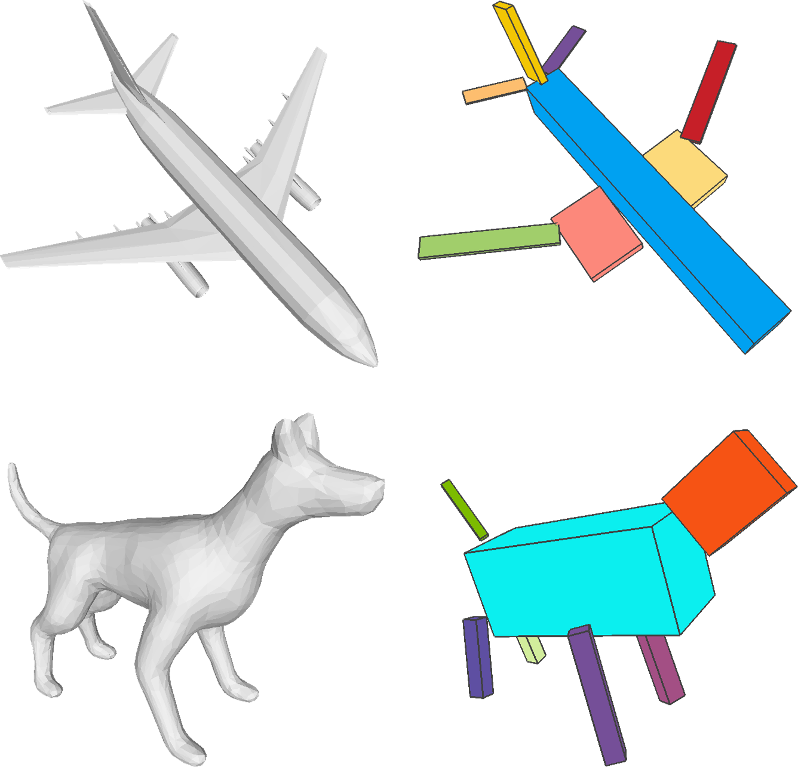
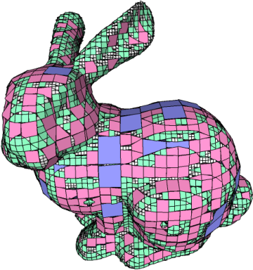
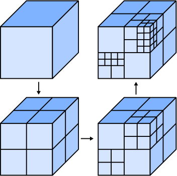

|
Chunyu Sun (孙春宇)
Ph.D candidate
|
|

|
Learning Adaptive Hierarchical Cuboid Abstractions of 3D Shape Collections
Chun-Yu Sun, Qian-Fang Zou, Xin Tong and Yang Liu ACM Transactions on Graphics (SIGGRAPH Asia), 38(6), 2019 [Project page] [Code] [Slides] [DOI] |
|

|
Adaptive O-CNN: A Patch-based Deep Representation of 3D Shapes
Peng-Shuai Wang, Chun-Yu Sun, Yang Liu and Xin Tong ACM Transactions on Graphics (SIGGRAPH Asia), 37(6), 2018 [Project page] [Code] [Slides] [DOI] |
|

|
O-CNN: Octree-based Convolutional Neural Networks for 3D Shape Analysis
Peng-Shuai Wang, Yang Liu, Yu-Xiao Guo, Chun-Yu Sun and Xin Tong ACM Transactions on Graphics (SIGGRAPH), 36(4), 2017 [Project page] [Code] [Slides] [DOI] |
| Second Prize in Summer Practice of Tsinghua University | 2017 |
| National Scholarship | 2014, 2013, 2012 |